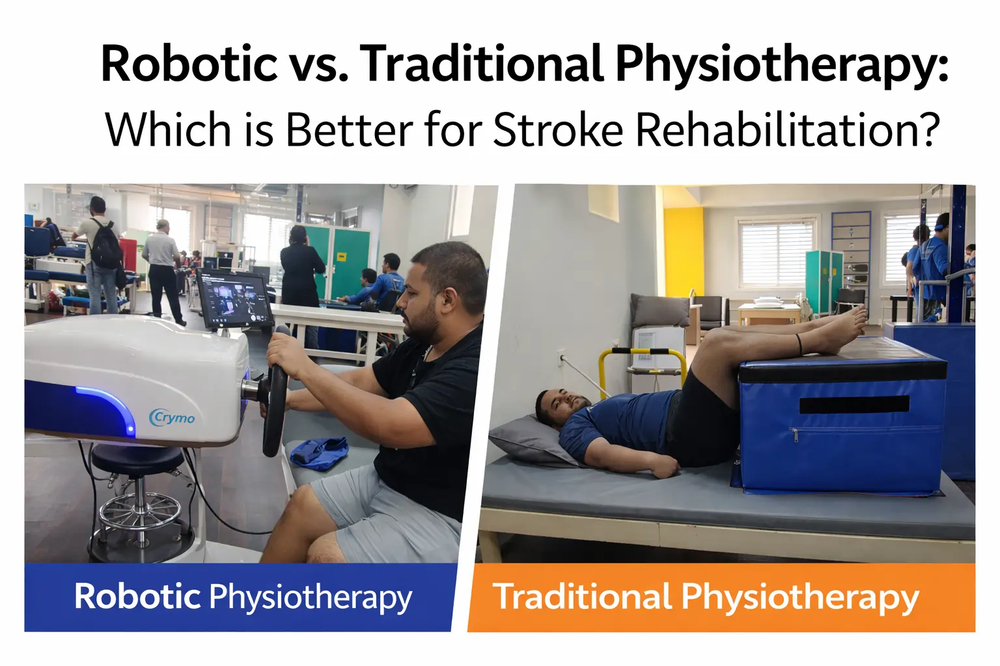

Robotic vs. Traditional Physiotherapy: Which is Better for Stroke Rehabilitation? and Safety


23
JAN

Dr. Amol Kathar
MPT (Neuro), 3.5+ years clinical
experience in neurological rehabilitation
Imagine two people, Arun and Meena. Both had a stroke. Arun’s therapy involves a kind robot arm. It guides his weakened arm, again and again. A screen shows his progress like a game. Meena’s therapy is different. Her therapist, Priya, uses her own hands. She supports Meena’s arm. She asks her to reach for a real cup. She adjusts her grip on the spot.
Both are working hard. Both are getting better. But their journeys feel different. Which path leads to the best recovery?
If you’re searching for the best neurorehabilitation in Pune, you’ve likely seen these two options: high-tech Robotic Neuro Rehabilitation in Pune and hands-on traditional methods. Most articles simply list their features. They create a rivalry. But the real story is more nuanced. It’s not about which is better. It is about which is better for you, at this specific moment in your recovery.
This guide cuts through the noise. We will explore the honest strengths and the unspoken gaps of both approaches. We will talk about what most websites ignore: the "motivation paradox," the hidden data from robots, and why your therapist’s skill matters more than the machine. Let’s find the smartest path for your recovery.
Beyond the Hype: What Are These Therapies, Really?
First, let's clear up what we mean. Both methods aim for the same goal: to re-train your brain and body after a stroke.
Traditional physiotherapy for stroke rehab is a partnership. A skilled therapist uses their hands, eyes, and deep knowledge. They guide your movements. They give you real-world tasks. They might use simple tools like bands or balance boards. The focus is on re-learning function. Think of it as a master craftsperson, helping you rebuild the skill of movement from the ground up.
Robotic-assisted physiotherapy for stroke rehab is a tool of precision. You work with a specialized machine, like an exoskeleton or a guided arm device. It can move your limb for you. It can also resist you. It provides perfect, tireless repetition. It collects exact data on your strength and shakiness. Think of it as a high-tech measuring lab for your movement.
The core difference? Traditional therapy trains your brain-in-context. Robotic therapy trains your muscles and nerves with precision.
The Head-to-Head Comparison: What You See vs. What You Don’t
Let’s break down the common comparisons and then dive into what people rarely discuss.
1. Effectiveness: What Does “Better” Actually Mean?
Most studies agree: both methods work. But how they work reveals the key.
- For Pure Repetition & Early-Stage Strength: Robotics win. A weak arm might not move at all. A robot can assist it through hundreds of correct movements in one session. This "massed practice" is gold for waking up sleeping neural pathways. It is fantastic for improving a specific joint's range of motion.
- For Real-World Function & Problem-Solving: Traditional therapy often wins. Recovery isn't just about moving your arm in a straight line. It's about using that arm to eat while talking, on a sticky chair, with a slippery spoon. Traditional therapists excel at this complex, adaptive training. They prepare you for life’s beautiful mess.
The Unspoken Truth: A 2021 review in Journal of NeuroEngineering and Rehabilitation noted that robotic gains don't always "transfer" to daily tasks. You might get stronger on the machine, but still struggle with a shirt button. The therapist’s job is to make that transfer happen.
2. The Human Element: Motivation, Bond, and “Feel”
This is where it gets personal.
- The Motivation Paradox: Robots use games and scores. For some, this is a huge boost. It turns hard work into a challenge. But for others, it leads to "passive engagement." The patient lets the machine do the work, disconnecting from the effort. The screen becomes the focus, not their own body.
- The Therapeutic Alliance: You cannot code empathy. The bond with a therapist who celebrates your small win, who pushes you gently on a hard day, is a powerful, unmeasurable force. This human connection provides emotional fuel for the long recovery journey. It is a core part of holistic stroke treatment in Pune.
3. Practical Realities: Cost, Access, and Data
Here is a frank look at factors that greatly affect your rehabilitation journey but are rarely discussed so openly.
| Consideration | Robotic-Assisted Therapy | Traditional Hands-On Therapy |
|---|---|---|
| Access & Availability | Limited. Requires major investment by the clinic. Typically found only in specialized neuro rehabilitation centres in Pune. | Widely available. Offered at most physiotherapy clinics and can be provided at home. |
| The Therapist's Evolving Role | Becomes a strategist and data analyst. Their skill is in programming the robot correctly and interpreting the data it produces. | Is the primary instrument of therapy. Recovery relies on their hands-on guidance, observation, and immediate tactile feedback. |
| The "Black Box" Data | The Hidden Factor: Machines collect thousands of precise movement data points. The critical question is: Who interprets this data to meaningfully adjust your care plan? Without expert analysis, it's just numbers. | Data is functional and observational. Progress is measured in real-world tasks: "You walked to the kitchen with less help today." The feedback is immediate and easy to understand. |
The Cost Conversation: Robotic therapy has a high upfront cost for clinics. This can make sessions more expensive or harder to find. Traditional therapy is labor-intensive but often more accessible. The best physio for stroke rehab considers long-term value: sometimes, a short burst of robotic therapy early on can create gains that make years of traditional therapy more effective.
The Critical Factors Most Rehab Centres Don’t Tell You
Let’s pull back the curtain on what usually stays in the therapist’s room.
1. The Sensory Gap. Your skin and muscles are full of sensors that tell your brain where your limb is. A robot moves your arm perfectly. But a therapist’s hands provide subtle, changing pressure and warmth. This rich sensory input is crucial for retraining your brain’s body map. Can a cold metal exoskeleton replicate that? Not yet.
2. It’s Never an Either/Or Choice. The most advanced neuro rehabilitation centre in Pune will not make you choose. They will blend them. The future is hybrid models. Imagine this: a robot helps you perform 300 clean shoulder movements in the morning. In the afternoon, your therapist uses that new range of motion to practice picking up a hairbrush or pulling a chair. The robot builds the component; the therapist builds the skill.
3. Your Therapist’s Expertise is the Real Technology. The best tool is useless without a master. A skilled therapist operating a robot is like a concert pianist with a grand piano. A less skilled one is like a beginner on the same piano. Always ask: “How will your therapists decide which method I use each day?” The answer tells you more than a list of machines.
Finding Your Path: A Simple Guide for Patients & Families
So, how do you navigate this? Ask these questions:
- What is my current stage? Severe weakness often benefits from robotic assistance to start. Later, for improving walking or complex tasks, traditional methods may take the lead.
- What is my personality? Do graphs and games excite you? Or do you need a person’s encouragement?
- What is my main goal? Is it to straighten my elbow, or is it to be able to feed myself lunch? Be specific.
- Does the centre offer both? A true best neurorehabilitation in Pune will have both tools and the wisdom to use them together.
The Clear Winner Is a Smart Partnership
The debate is not Robot vs. Human. It is Robot & Human vs. the Stroke.
Robotic therapy offers unmatched precision, repetition, and measurable data. Traditional therapy offers adaptability, real-world skill training, and irreplaceable human connection. The most effective rehabilitation for stroke recovery happens when these two forces are intelligently combined by experts who see you as a whole person.
At our neuro rehabilitation centre in Pune, we see technology as a powerful ally to our therapists’ skill, not a replacement. The goal is never just to use the robot. The goal is to use the right tool at the right time to help you reclaim your independence, one meaningful victory at a time.
Are you ready to look beyond the simple choice and build a recovery plan that truly understands all the tools available?
About
author
Dr. Amol Kathar is the Clinical Head and Neurophysiotherapist at Apricot Care,
Pune.
With 3.5 years of experience, he specializes in personalized rehabilitation for stroke, spinal cord injuries, and mobility training to help patients regain independence.
With 3.5 years of experience, he specializes in personalized rehabilitation for stroke, spinal cord injuries, and mobility training to help patients regain independence.